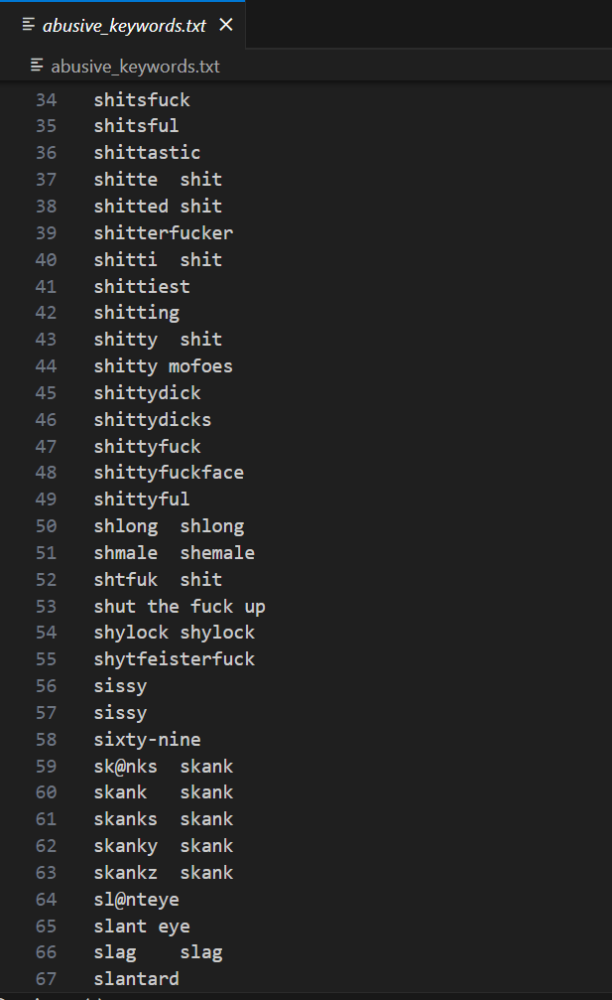

YOUTUBE COMMENT ABUSIVITY ANALYZER
Report PPT Video Code
Introduction
In the digital age, social media platforms have become an integral part of our lives, serving as spaces for communication, expression, and sharing of ideas. However, the rise of abusive comments on these platforms has raised concerns about the well-being of users and the need to foster more respectful online environments. This project aims to tackle this issue by detecting and addressing abusive comments on social media. We employ a method that involves collecting comments from various social media platforms, preprocessing the text data, and then searching for tokens within a dataset of abusive keywords to determine which comments may be abusive.

Abstract
In recent years, there has been a significant surge in the volume of digital content shared on various social media platforms. Online Social Networks (OSNs) have become an essential source of news, information, and entertainment. However, alongside the many advantages of using OSNs, there is a growing problem of individuals misusing these platforms to spread harmful and offensive content.
Abusive speech encompasses any form of communication that aims to demean, insult, or incite hatred against vulnerable individuals or groups based on factors such as gender, sexual orientation, ethnicity, or disability, using offensive language. Because of this diversity in thematic foci, the abusive comments are referred to as themes. Examples of topics include misogyny, misandry, homophobia, transphobia, and xenophobia.
Abusive speech causes severe psychological effects on the targeted individual. These abusive comments also can create controversy over social media on a specific individual or a group of people. This shows the need for restricting these kinds of abusive comments from being posted on social media. There is a need to develop a model that can detect and classify such abusive comments.
Video
Method
1] Data Collection and Preprocessing:
To start, we gather comments from different social media sources to create a diverse and representative dataset. These comments come in various forms and styles, and they need to be preprocessed before analysis. Preprocessing involves standardizing the text data by lowercasing all characters, tokenizing the text into words or subwords, and addressing common issues like spelling mistakes and slang. This step ensures that the comments are in a suitable format for analysis.
For this data collection, the Youtube Comment Abusivity Analyzer asks for the video link as shown here.
2] Abusive Keywords Dataset and Token Search:
Our project utilizes a dataset of abusive keywords, which comprises a list of terms associated with abusive speech, including profanity, hate speech, and offensive language as shown in the figures below. We then search for the tokens from the preprocessed comments within this abusive keywords dataset. If a token from a comment matches a keyword in this dataset, the comment is flagged as potentially abusive.

3] Identification of Abusive Comments:
The primary goal of our method is to identify comments that exhibit signs of abusive language or content. When a comment is identified as potentially abusive, it can be highlighted, tagged, or reported for further review. This helps create a safer online environment by promptly addressing potentially harmful content and protecting the well-being of users.